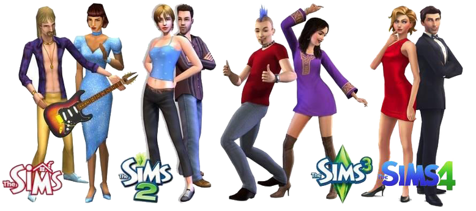
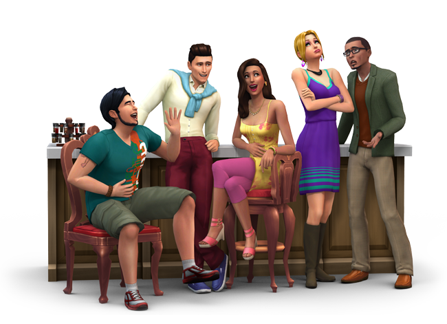

The Sims graphics have grown over the 18 year period. Each new game there have been new types of graphics and code with each game better than the last. In the Sims 4 they have decided to make the gameplay less lagy and more about the gameplay.


They just added first person view. This is the first time the Sims team has added first person view. Come on I know you want to know what woohooing is in first person.